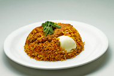

Skip to main content
Skip to footer links
Home
|
About Us
|
Menu
|
Contact Us
|
Text to Order 5% off
Msg and Data Rates May Apply
Vegetarian Appetizers
Non-Vegetarian Appetizers
Mayura Uthappam
Dosas
Vegetarian Dishes
Chicken Dishes
Other Meats & Seafood
Indian Breads
Navaa Specials
Curry Specials
Biryani
Fried Rice
Noodles
Indo-Chinese Dishes
Indian Soups
Rice Dishes
Indian Sideorders
Lunch & Dinner Specials

Mayura Specials
Thali
Desserts
Beverages
Beers
Wine